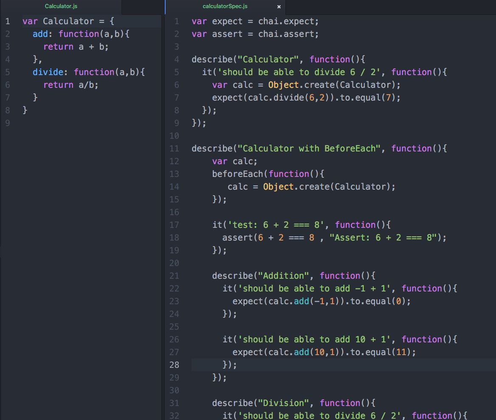
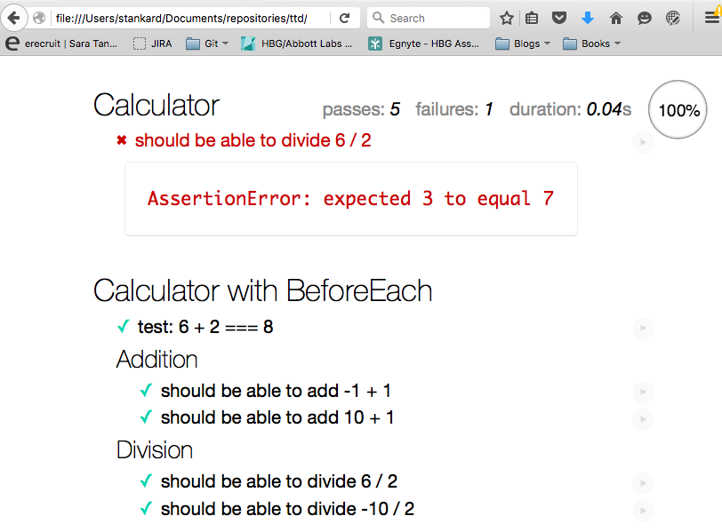

<section>
  <section>
    <h3>MOCHA</h3>
    <pre><code class="smaller height-50">     <!--head-->
      	<meta charset="UTF-8">
      	<title>Mocha Tests</title>
        <link rel="stylesheet" href="mocha.css">
      <!--/head-->

      <!--body-->
        <div id="mocha"></div>
        <!--lib-->
        <script src="mocha.js"></script>
        <script src="lib/interfaces/chai.js"></script>
        <script>mocha.setup('bdd')</script>
        <!--source files-->
        <script src="src/Calculator.js"></script>

        <!--test files-->
      	<script src="test/calculatorSpec.js"></script>

        <script type="text/javascript">
          mocha.run();
        </script>
      <!--/body--></code></pre>
  </section>

  <section>
    <aside class="mocha ">
      see how mocha supports assert statements as well as expect statements
    </aside>
    
  </section>

  <section>
    
  </section>


</section>
